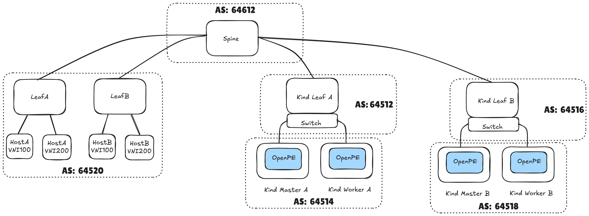
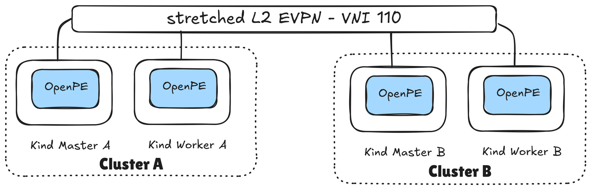
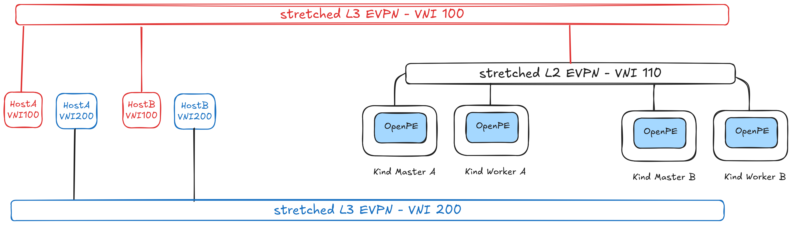

Stretching a Layer 2 network over multiple KubeVirt clusters
Introduction
KubeVirt enables you to run virtual machines (VMs) within Kubernetes clusters, but networking VMs across multiple clusters presents significant challenges. Current KubeVirt networking relies on cluster-local solutions, which cannot extend Layer 2 broadcast domains beyond cluster boundaries. This limitation forces applications that require L2 connectivity to either remain within a single cluster or undergo complex network reconfiguration when distributed across clusters.
Integrating with EVPN addresses this fundamental limitation in distributed KubeVirt deployments: the inability to maintain L2 adjacency between VMs running on different clusters. By leveraging EVPN’s BGP-based control plane and advanced MAC/IP advertisement mechanisms, we can now stretch Layer 2 broadcast domains across geographically distributed KubeVirt clusters, creating a unified network fabric that treats multiple clusters as a single, cohesive infrastructure.
Why Stretch L2 Networks across different clusters ?
The ability to extend L2 domains between KubeVirt clusters unlocks several critical capabilities that were previously difficult to achieve. Traditional cluster networking creates isolation boundaries that, while beneficial for security and resource management, can become barriers when applications require tight coupling or when operational requirements demand flexibility in workload placement.
All in all, stretching an L2 domain across cluster boundaries enables use cases that are fundamental to infrastructure reliability and flexibility, which include:
- Cross Cluster Live Migration: VMs must migrate between clusters without requiring IP address changes, DNS updates, or application reconfiguration. This capability is essential for disaster recovery scenarios where VMs must failover to geographically distant clusters while still maintaining their network identity and established connections.
- Legacy enterprise applications availability: many mission-critical workloads were designed with assumptions about L2 adjacency, such as database clusters requiring heartbeat mechanisms over broadcast domains, application servers expecting multicast discovery, or network-attached storage systems relying on L2 protocols.
- Resource optimization and capacity planning: organizations can distribute VM workloads based on compute availability, cost considerations, or compliance requirements while maintaining the network simplicity that applications expect. This flexibility becomes particularly valuable in hybrid cloud scenarios where workloads may need to seamlessly span on-premises KubeVirt clusters and cloud-hosted instances.
This is where the power of EVPN comes into play: by integrating EVPN into the KubeVirt ecosystem, we can create a sophisticated L2 overlay. Think of it as a virtual network fabric that stretches across your data centers or cloud regions, enabling the workloads running in KubeVirt clusters to attach to a single, unified L2 domain.
In this post, we’ll dive into how this powerful combination works and how it unlocks true application mobility for your virtualized workloads on Kubernetes.
Prerequisites
The list below is required to run this demo. This will enable you to run multiple Kubernetes clusters in your own laptop, interconnected by EVPN using openperouter.
- container runtime - docker - installed in your system
- git
- make
The testbed
The testbed will be implemented using a physical network deployed in leaf/spine topology, which is a common two-layer network architecture used in data centers. It consists of leaf switches that connect to end devices, and spine switches that interconnect all leaf switches. This way, workloads will always be (at most) two hops away from one another.

The diagram highlights the autonomous system (AS) numbers each of the components will use.
We can infer from the AS numbers provided above that the testbed will feature eBGP configuration, thus providing routing between different autonomous systems.
We will setup the testbed using containerlab, and the Kubernetes clusters are deployed using KinD. The BGP speakers (routers) in each leaf are implemented using FRR.
Spawning the testbed on your laptop
To spawn the tested in your laptop, you should clone the openperouter repo.
git clone https://github.com/openperouter/openperouter.git
git checkout c9d591a
cd openperouter
Assuming you have all the requirements installed in your
laptop, all you need to do is build the router component, and execute the
deploy-multi make target. Then, you should be ready to go!
sysctl -w fs.inotify.max_user_instances=1024 # might need sudo
make docker-build && make deploy-multi
After running this make target, you should have the testbed deployed as shown in the testbed’s diagram. One thing is missing though: the autonomous systems in the kind clusters are not configured yet! This will be configured in the next section.
The kubeconfigs to connect to each cluster can be found in openperouter’s
bin directory:
ls $(pwd)/bin/kubeconfig-*
/root/github/openperouter/bin/kubeconfig-pe-kind-a /root/github/openperouter/bin/kubeconfig-pe-kind-b
Before moving to the configuration section, let’s install KubeVirt in both clusters:
for kubeconfig in $(ls bin/kubeconfig-*); do
echo "Installing KubeVirt in cluster using KUBECONFIG=$kubeconfig"
KUBECONFIG=$kubeconfig kubectl apply -f https://github.com/kubevirt/kubevirt/releases/download/v1.5.2/kubevirt-operator.yaml
KUBECONFIG=$kubeconfig kubectl apply -f https://github.com/kubevirt/kubevirt/releases/download/v1.5.2/kubevirt-cr.yaml
# Patch KubeVirt to allow scheduling on control-planes, so we can test live migration between two nodes
KUBECONFIG=$kubeconfig kubectl patch -n kubevirt kubevirt kubevirt --type merge --patch '{"spec": {"workloads": {"nodePlacement": {"tolerations": [{"key": "node-role.kubernetes.io/control-plane", "operator": "Exists", "effect": "NoSchedule"}]}}}}'
KUBECONFIG=$kubeconfig kubectl wait --for=condition=Available kubevirt/kubevirt -n kubevirt --timeout=10m
echo "Finished installing KubeVirt in cluster using KUBECONFIG=$kubeconfig"
done
Configuring the KubeVirt clusters
As indicated in the introduction section, the end goal is to stretch a layer 2 network across both Kubernetes clusters, using EVPN. Please refer to the image below for a simple diagram.

In order to stretch an L2 overlay across both cluster we need to:
- configure the underlay network
- configure the EVPN VXLAN VNI
We will rely on openperouter for both of these.
Let’s start with the underlay network, in which we will connect the Kubernetes clusters to each cluster’s top of rack BGP/EVPN speaker.
Configuring the underlay network
The first thing we need to do is to finish setting up the testbed by peering our two Kubernetes clusters with the BGP/EVPN speaker in each cluster’s top of rack:
kindleaf-afor cluster-akindleaf-bfor cluster-b
This will require you to specify the expected AS numbers, to define the VXLAN tunnel endpoint addresses, and also specify which node interface will be used to connect to external routers.
For that, you will need to provision the following CRs:
- Cluster A.
KUBECONFIG=$(pwd)/bin/kubeconfig-pe-kind-a kubectl apply -f - <<EOF
apiVersion: openpe.openperouter.github.io/v1alpha1
kind: Underlay
metadata:
name: underlay
namespace: openperouter-system
spec:
asn: 64514
evpn:
vtepcidr: 100.65.0.0/24
nics:
- toswitch
neighbors:
- asn: 64512
address: 192.168.11.2
EOF
- Cluster B.
KUBECONFIG=$(pwd)/bin/kubeconfig-pe-kind-b kubectl apply -f - <<EOF
apiVersion: openpe.openperouter.github.io/v1alpha1
kind: Underlay
metadata:
name: underlay
namespace: openperouter-system
spec:
asn: 64518
evpn:
vtepcidr: 100.65.1.0/24
routeridcidr: 10.0.1.0/24
nics:
- toswitch
neighbors:
- asn: 64516
address: 192.168.12.2
EOF
Configuring the EVPN VNI
Once we have configured both Kubernetes cluster’s peering with the external
routers in kindleaf-a and kindleaf-b, we can now focus on defining the
layer2 EVPN. For that, we will use openperouter’s L2VNI CRD.
Execute the following commands to provision the L2VNI in both clusters:
# provision L2VNI in cluster: pe-kind-a
KUBECONFIG=$(pwd)/bin/kubeconfig-pe-kind-a kubectl apply -f - <<EOF
apiVersion: openpe.openperouter.github.io/v1alpha1
kind: L2VNI
metadata:
name: layer2
namespace: openperouter-system
spec:
hostmaster:
autocreate: true
type: bridge
l2gatewayip: 192.170.1.1/24
vni: 110
vrf: red
EOF
# provision L2VNI in cluster: pe-kind-b
KUBECONFIG=$(pwd)/bin/kubeconfig-pe-kind-b kubectl apply -f - <<EOF
apiVersion: openpe.openperouter.github.io/v1alpha1
kind: L2VNI
metadata:
name: layer2
namespace: openperouter-system
spec:
hostmaster:
autocreate: true
type: bridge
l2gatewayip: 192.170.1.1/24
vni: 110
vrf: red
EOF
After this step, we will have created an L2 overlay network on top of the network fabric. We now need to enable it to be plumbed to the workloads. Execute the commands below to provision a network attachment definition in both clusters:
# provision NAD in cluster: pe-kind-a
KUBECONFIG=$(pwd)/bin/kubeconfig-pe-kind-a kubectl apply -f - <<EOF
apiVersion: "k8s.cni.cncf.io/v1"
kind: NetworkAttachmentDefinition
metadata:
name: evpn
spec:
config: |
{
"cniVersion": "0.3.1",
"name": "evpn",
"type": "bridge",
"bridge": "br-hs-110",
"macspoofchk": false,
"disableContainerInterface": true
}
EOF
# provision NAD in cluster: pe-kind-b
KUBECONFIG=$(pwd)/bin/kubeconfig-pe-kind-b kubectl apply -f - <<EOF
apiVersion: "k8s.cni.cncf.io/v1"
kind: NetworkAttachmentDefinition
metadata:
name: evpn
spec:
config: |
{
"cniVersion": "0.3.1",
"name": "evpn",
"type": "bridge",
"bridge": "br-hs-110",
"macspoofchk": false,
"disableContainerInterface": true
}
EOF
Now that we have set up networking for the workloads, we can proceed with actually instantiating the VMs which will attach to this network overlay.
Provisioning and running the VM workloads
You will have one VM running in cluster A (vm-1), and another VM running in cluster B (vm-2).
The VMs will each have one network interface, attached to the layer2 overlay. The VMs are using bridge binding, and they attach to the overlay using bridge-cni. Both VMs have static IPs, configured over cloud-init. They are:
| VM name | Cluster | IP address |
|---|---|---|
| vm-1 | pe-kind-a | 192.170.1.3 |
| vm-2 | pe-kind-b | 192.170.1.30 |
To provision these, follow these steps:
- Provision
vm-1in clusterpe-kind-a:
KUBECONFIG=$(pwd)/bin/kubeconfig-pe-kind-a kubectl apply -f - <<EOF
apiVersion: kubevirt.io/v1
kind: VirtualMachine
metadata:
name: vm-1
spec:
runStrategy: Always
template:
metadata:
labels:
kubevirt.io/vm: vm-1
spec:
tolerations:
- key: node-role.kubernetes.io/control-plane
operator: Exists
effect: NoSchedule
domain:
devices:
interfaces:
- bridge: {}
name: evpn
disks:
- disk:
bus: virtio
name: containerdisk
- disk:
bus: virtio
name: cloudinitdisk
resources:
requests:
memory: 2048M
machine:
type: ""
networks:
- multus:
networkName: evpn
name: evpn
terminationGracePeriodSeconds: 0
volumes:
- containerDisk:
image: quay.io/kubevirt/fedora-with-test-tooling-container-disk:v1.5.2
name: containerdisk
- cloudInitNoCloud:
networkData: |
version: 2
ethernets:
eth0:
addresses:
- 192.170.1.3/24
gateway4: 192.170.1.1
name: cloudinitdisk
EOF
- Provision
vm-2in clusterpe-kind-b:
KUBECONFIG=$(pwd)/bin/kubeconfig-pe-kind-b kubectl apply -f - <<EOF
apiVersion: kubevirt.io/v1
kind: VirtualMachine
metadata:
name: vm-2
spec:
runStrategy: Always
template:
metadata:
labels:
kubevirt.io/vm: vm-2
spec:
tolerations:
- key: node-role.kubernetes.io/control-plane
operator: Exists
effect: NoSchedule
domain:
devices:
interfaces:
- bridge: {}
name: evpn
disks:
- disk:
bus: virtio
name: containerdisk
- disk:
bus: virtio
name: cloudinitdisk
resources:
requests:
memory: 2048M
machine:
type: ""
networks:
- multus:
networkName: evpn
name: evpn
terminationGracePeriodSeconds: 0
volumes:
- containerDisk:
image: quay.io/kubevirt/fedora-with-test-tooling-container-disk:v1.5.2
name: containerdisk
- cloudInitNoCloud:
networkData: |
version: 2
ethernets:
eth0:
addresses:
- 192.170.1.30/24
gateway4: 192.170.1.1
name: cloudinitdisk
EOF
We will use vm-2 (which runs in cluster B) as the “server”, and vm-1
(which runs in cluster A) as the “client”; however, we first need to wait
for the VMs to become Ready:
KUBECONFIG=bin/kubeconfig-pe-kind-a kubectl wait vm vm-1 --for=condition=Ready --timeout=60s
KUBECONFIG=bin/kubeconfig-pe-kind-b kubectl wait vm vm-2 --for=condition=Ready --timeout=60s
Now that we know the VMs are Ready, let’s confirm the IP address for vm-2,
and reach into it from the vm-1 VM, which is available in cluster A.
KUBECONFIG=bin/kubeconfig-pe-kind-b kubectl get vmi vm-2 -ojsonpath="{.status.interfaces[0].ipAddress}"
192.170.1.30
Let’s now serve some data. We will use a toy python webserver for that, which serves some files:
[fedora@vm-2 ~]$ touch $(date)
[fedora@vm-2 ~]$ ls -la
total 12
drwx------. 1 fedora fedora 122 Oct 13 12:08 .
drwxr-xr-x. 1 root root 12 Sep 13 2024 ..
-rw-r--r--. 1 fedora fedora 0 Oct 13 12:08 12:08:15
-rw-r--r--. 1 fedora fedora 0 Oct 13 12:08 13
-rw-r--r--. 1 fedora fedora 0 Oct 13 12:08 2025
-rw-r--r--. 1 fedora fedora 18 Jul 21 2021 .bash_logout
-rw-r--r--. 1 fedora fedora 141 Jul 21 2021 .bash_profile
-rw-r--r--. 1 fedora fedora 492 Jul 21 2021 .bashrc
-rw-r--r--. 1 fedora fedora 0 Oct 13 12:08 Mon
-rw-r--r--. 1 fedora fedora 0 Oct 13 12:08 Oct
-rw-r--r--. 1 fedora fedora 0 Oct 13 12:08 PM
drwx------. 1 fedora fedora 30 Sep 13 2024 .ssh
-rw-r--r--. 1 fedora fedora 0 Oct 13 12:08 UTC
[fedora@vm-2 ~]$ python3 -m http.server 8090
Serving HTTP on 0.0.0.0 port 8090 (http://0.0.0.0:8090/) ...
And let’s try to access that from the VM which runs in the other cluster:
KUBECONFIG=bin/kubeconfig-pe-kind-a virtctl console vm-1
# password to access the VM is fedora/fedora
[fedora@vm-1 ~]$ curl 192.170.1.30:8090
<!DOCTYPE HTML PUBLIC "-//W3C//DTD HTML 4.01//EN" "http://www.w3.org/TR/html4/strict.dtd">
<html>
<head>
<meta http-equiv="Content-Type" content="text/html; charset=utf-8">
<title>Directory listing for /</title>
</head>
<body>
<h1>Directory listing for /</h1>
<hr>
<ul>
<li><a href=".bash_logout">.bash_logout</a></li>
<li><a href=".bash_profile">.bash_profile</a></li>
<li><a href=".bashrc">.bashrc</a></li>
<li><a href=".ssh/">.ssh/</a></li>
<li><a href="12%3A08%3A15">12:08:15</a></li>
<li><a href="13">13</a></li>
<li><a href="2025">2025</a></li>
<li><a href="Mon">Mon</a></li>
<li><a href="Oct">Oct</a></li>
<li><a href="PM">PM</a></li>
<li><a href="UTC">UTC</a></li>
</ul>
<hr>
</body>
</html>
As you can see, the VM running in cluster A was able to successfully reach into the VM running in cluster B.
Bonus track: connecting to provider networks using an L3VNI
This extra (optional) step showcases how you can import provider network routes
into the Kubernetes clusters - essentially creating an L3 overlay - using
openperouters L3VNI CRD.
We will use it to reach into the webserver hosted in hostA (attached to
leafA in the diagram) from the VMs running in both clusters.
Please refer to the image below to get a better understanding of the scenario.

Since we already have configured the underlay in a
previous step, all we need to do is to
configure the L3VNI; for that, provision the following CR in both
clusters:
# provision L3VNI in cluster: pe-kind-a
KUBECONFIG=$(pwd)/bin/kubeconfig-pe-kind-a kubectl apply -f - <<EOF
apiVersion: openpe.openperouter.github.io/v1alpha1
kind: L3VNI
metadata:
name: red
namespace: openperouter-system
spec:
vni: 100
vrf: red
EOF
# provision L3VNI in cluster: pe-kind-b
KUBECONFIG=$(pwd)/bin/kubeconfig-pe-kind-b kubectl apply -f - <<EOF
apiVersion: openpe.openperouter.github.io/v1alpha1
kind: L3VNI
metadata:
name: red
namespace: openperouter-system
spec:
vni: 100
vrf: red
EOF
This will essentially wrap the existing L2VNI with an L3 domain - i.e. a
separate Virtual Routing Function (VRF), whose Virtual Network Identifier (VNI)
is 100. This will enable the Kubernetes clusters to reach into services located in
the red VRF (which have VNI = 100). Services on hostA and/or hostB with
VNI = 200 are not accessible, since we haven’t exposed them over EVPN (using an
L3VNI).
Once we’ve provisioned the aforementioned L3VNI, we can now check accessing
the webserver located in the host in leafA - clab-kind-leafA.
docker exec clab-kind-hostA_red ip -4 addr show dev eth1
228: eth1@if227: <BROADCAST,MULTICAST,UP,LOWER_UP> mtu 9500 qdisc noqueue state UP group default link-netnsid 1
inet 192.168.20.2/24 scope global eth1
valid_lft forever preferred_lft forever
Let’s also check the same thing for the blue VRF - for which we do not
have any VNI configuration.
docker exec clab-kind-hostA_blue ip -4 addr show dev eth1
273: eth1@if272: <BROADCAST,MULTICAST,UP,LOWER_UP> mtu 9500 qdisc noqueue state UP group default link-netnsid 1
inet 192.168.21.2/24 scope global eth1
valid_lft forever preferred_lft forever
And let’s now access these services from the VMs we have in both clusters.
From vm-1, in cluster A:
# username/password => fedora/fedora
virtctl console vm-1
Successfully connected to vm-1 console. The escape sequence is ^]
vm-1 login: fedora
Password:
[fedora@vm-1 ~]$ curl 192.168.20.2:8090/clientip # we have access to the RED VRF
192.170.1.3:35146
[fedora@vm-1 ~]$ curl 192.168.21.2:8090/clientip # we do NOT have access to the BLUE VRF
curl: (28) Failed to connect to 192.168.21.2 port 8090 after 128318 ms: Connection timed out
From vm-2, in cluster B:
# username/password => fedora/fedora
virtctl console vm-2
Successfully connected to vm-2 console. The escape sequence is ^]
vm-2 login: fedora
Password:
[fedora@vm-2 ~]$ curl 192.168.20.2:8090/clientip # we have access to the RED VRF
192.170.1.30:52924
[fedora@vm-2 ~]$ curl 192.168.21.2:8090/clientip # we do NOT have access to the BLUE VRF
curl: (28) Failed to connect to 192.168.21.2 port 8090 after 130643 ms: Connection timed out
Conclusions
In this article we have explained EVPN and which virtualization use cases it can provide.
We have also shown how the openperouter
L2VNI CRD can be used to stretch a Layer 2 overlay across multiple Kubernetes
clusters.
Finally, we have also seen how openperouter L3VNI can be used to create
Layer 3 overlays, which allows the VMs running in the Kubernetes clusters to
access services in the exposed provider networks.